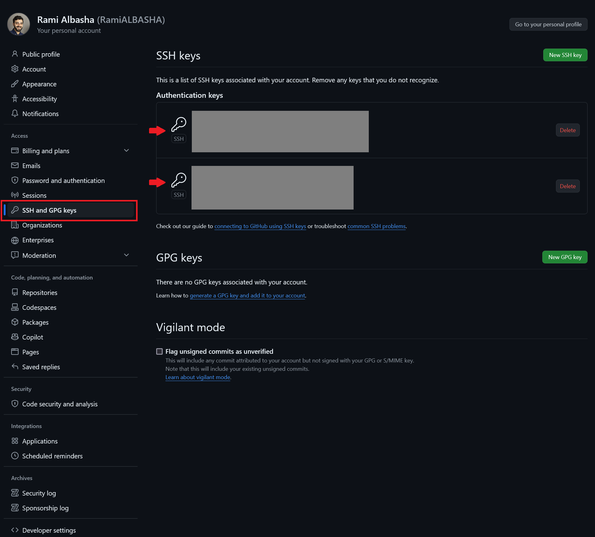
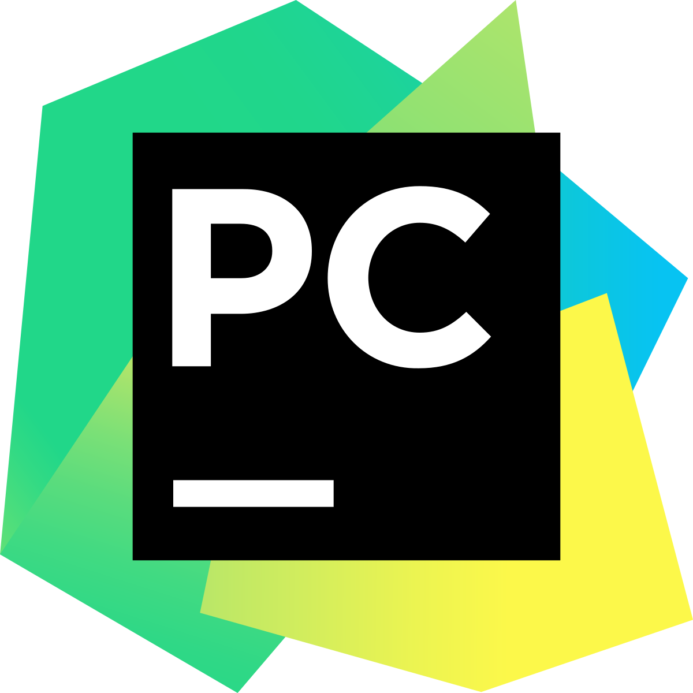
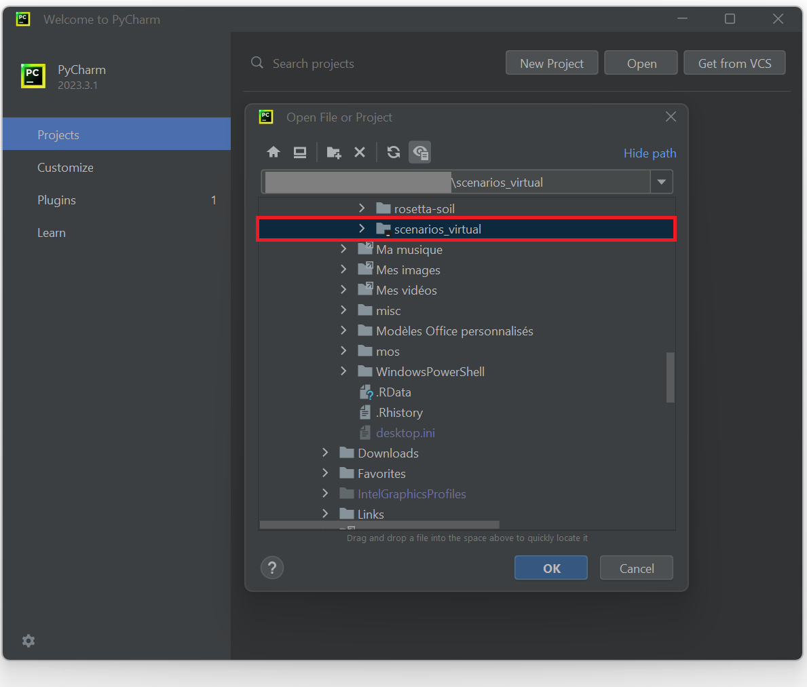
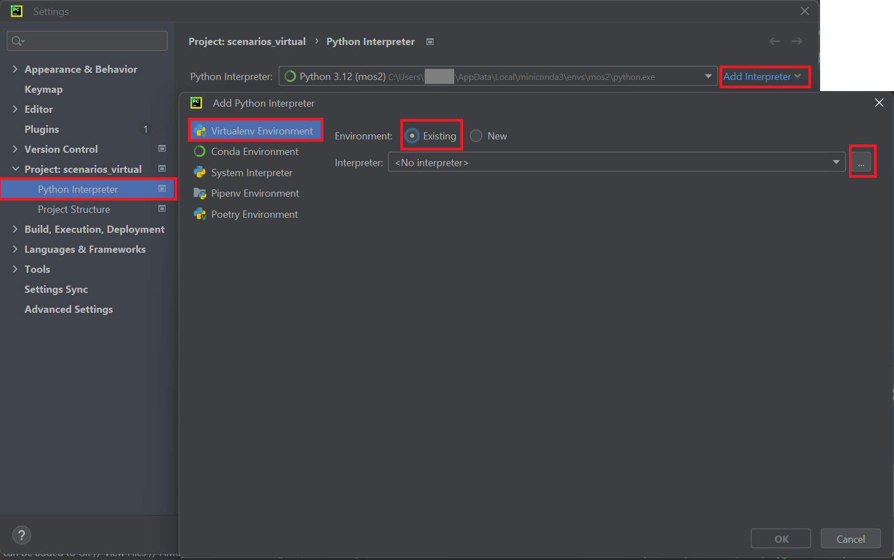
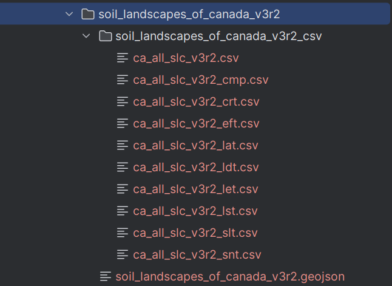

Installation
Prerequisites
Git 
Git is a free and open source distributed version control system that allows versioning your code.
Ensure that git executable is installed: open a terminal (e.g. Windows PowerShell) and type git --version.
If Git is not installed, you may install it following the instructions here.
conda 
conda is a package and environment manager. It allows to create environments, install PythonTM packages and their dependencies within these environments. miniconda is a free minimal installer for conda.
Ensure that conda executable is installed by typing in a terminal conda --version.
If conda is not installed (command not found) you can install it by following these instructions (install
miniconda).
Once miniconda installed, you will be able to see an Anaconda Powershell Prompt (Miniconda3) added to your system.
This terminal will allow you to run conda commands. You may also execute conda with other terminals.
In order to do so, type in Anaconda Powershell Prompt (Miniconda3) conda init (refer to this doc for details).
GitHub 
You must also ensure that you have a valid GitHub. You can create your account by the instructions here.
It is recommended to clone projects from GitHub using the Secure Shell Protocol (SSH) protocol. Ensure that your GitHub profile has a public SSH key linked to a private key locally. Check out your existing SSH keys by going to your GitHub profile settings:

For more details on how to check if you have existing SSH keys, refer to the instructions here.
If you want to create an new pair of SSH-keys, please follow the instructions here.
PyCharm

PyCharm is an integrated development environment (IDE) used for programming in PythonTM. It provides powerful facilities for code analysis, debugging, testing and versioning, among others.
To install PyCharm, you will have to download the executable from here (Professional or Community edition) and then execute it in your PC.
The PyHolos package
Go the folder where you would like to clone PyHolos. Right-click on the window and open a terminal then
type:
git clone git@github.com:ProjetSOM/scenarios_virtual.git
Move inside the project folder:
cd pyholos
Now you can create a conda (or mamba) environment inside which you will install pyholos and all its
dependencies. Let’s create and activate an environment called ‘MyEnv’:
conda create -n MyEnv python pip
conda activate MyEnv
Now install the dependencies using pip:
pip install -r requirements.txt
Finally, install pyholos:
pip install -e .
You’re done installing the package!
Launch now PyCharm and open the package folder as a project:

Go now to:
File → Settings → Project: scenario_virtual/Python → interpreter → Add Interpreter → Add local Interpreter…
then choose Virtualenv Environment and pick an Existing environment. Under , the conda environment interpreter that you need must be situated under :
C:\Users\<YourUserName>\AppData\Local\miniconda3\envs\<YourEnvironmentName>\python.exe

Note
pip is another package manager (often faster) for installing package dependencies than conda. It can be installed within a conda environment.
Note
In the future, pyholos will be deployed to third-party software repositories (e.g. PyPI). Meanwhile, the user will need to clone the source code in order to build it locally.
cd <directory_where_pyholos_will_be_cloned>
git clone git@github.com:Mon-Systeme-Fourrager/holos_service.git
cd holos_service
pip install -e .
Soil data files
Soil data is required when using PyHolos to create inputs for Holoc CLI. As in the C# source code of Holos, PyHolos uses the data provided by the Soil Landscapes of Canada (SLC). Two types of data are required, respectively CSV and GeoJSON types. The CSV files include soil information per polygon and can be downloaded by hitting “Pre-packaged CSV files” in SLC (downloads a zip file called “soil_landscapes_of_canada_v3r2_csv.zip”). The GeoJSON file includes complimentary spatially-identified soil information, downloadable by hitting “Pre-packaged GeoJSON files” in SLC (downloads a zip file called “soil_landscapes_of_canada_v3r2_geojson.zip”).
Note
For convenience the soil data are already added to this project under src/pyholos/resources. Prior to using
PyHolos, extract the zipped SLC files soil_landscapes_of_canada_v3r2_geojson.zip and remove the zip file.
The soil data files are only required when PyHolos is used to create input files for Holos CLI.
{kind=link}
